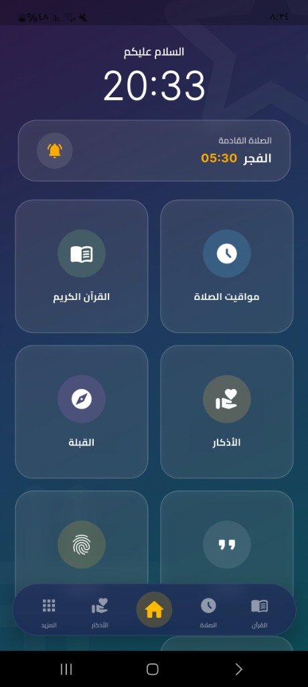

جاري تحميل التجربة الكاملة v1.0.7...
اكتشف تجربة إسلامية متكاملة تجمع بين الجمال والسهولة. متوفر الآن بنسخة الآيفون (IPA 1.0.7)، الأندرويد، الويندوز للكمبيوتر، وتطبيق الويب المباشر بكامل الميزات والأذان.

المصحف كاملاً بخط واضح، مع تلاوات صوتية لأشهر القراء وإمكانية الحفظ والمتابعة.
تنبيهات دقيقة للأذان حتى عند قفل الشاشة أو إغلاق التطبيق على الآيفون والأندرويد والكمبيوتر.
تحديد موقعك الجغرافي باللغة العربية تلقائياً وبوصلة دقيقة 100% لاتجاه القبلة أينما كنت.
حصن المسلم كاملاً، أذكار الصباح والمساء، وسبحة إلكترونية سلسة تساعدك على الذكر.
تابع الأيام البيض والمناسبات الدينية مع تقويم هجري وميلادي مدمج في واجهة واحدة.
استفسر عن مواقيت الصيام، اتجاه القبلة، أو ابحث في القرآن باستخدام الذكاء الاصطناعي.
اختر المنصة التي تناسبك واستمتع بنفس التجربة الروحانية الفاخرة
نسخة مخصصة لأجهزة iPhone & iPad بصيغة .ipa تدعم الأذان في الخلفية، الشاشة المقفلة، والإشعارات.
ملف APK مجاني وبسيط التثبيت لجميع هواتف سامسونج، شاومي، هواوي وبقية أجهزة الأندرويد.
تطبيق مكتبي كامل ونظيف لنظام الويندوز مع تشغيل تلقائي للأذان وتحديد موقعك باللغة العربية.
استخدم التطبيق فورياً داخل أي متصفح مع تفعيل إشعارات الأذان الدائمة حتى بعد إغلاق المتصفح.
.ipa وغير متوفرة على App Store حالياً، يمكنك تثبيتها بسهولة وبشكل آمن تماماً عبر كمبيوتر ويندوز أو ماك باستخدام برنامج Sideloadly المجاني بحساب Apple الخاص بك خلال 3 دقائق.